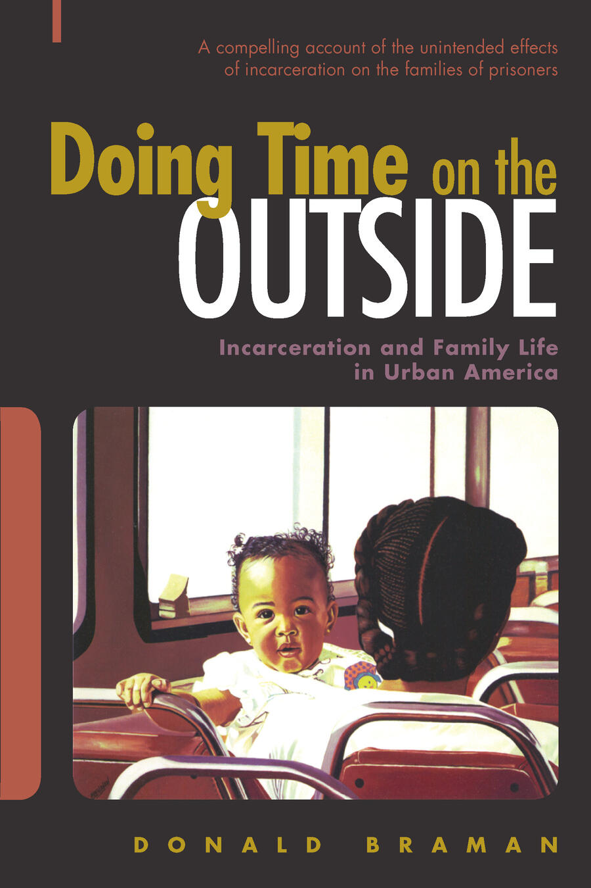
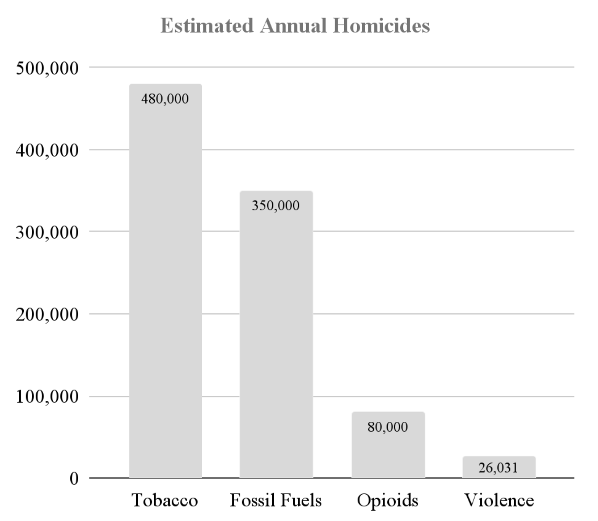
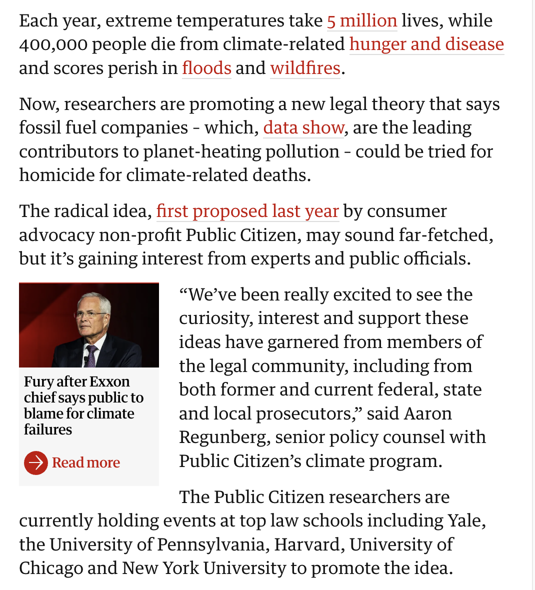
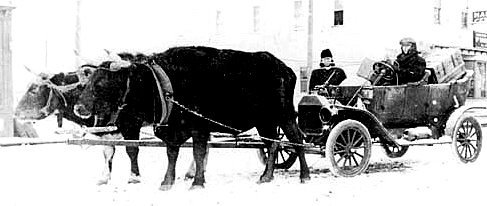

# Evidence! [Donald Braman](https://donaldbraman.github.io/markdown-cv) dbraman@law.gwu.edu 202-994-0572 --- # Diversity & Respect I want all of you—with all your diverse backgrounds and perspectives—to be well served by this course, and that the diversity that you bring to this class be viewed as a resource, strength and benefit. I endeavor to present materials and activities that are respectful of diversity: gender, sexuality, disability, age, socioeconomic status, ethnicity, race, and culture. Your suggestions are encouraged and appreciated. Please let me know ways to improve the effectiveness of the course for you personally or for other students or student groups. --- # What does this # person do? --- <p class="r-fit-text"> Empirical Research <br> Anthropology <br> Statistics <br> Machine Learning <br> Causal Inference <br> </p> ---  --- # Human Information Processing - Why people often fail to change their beliefs, even when they leave their information bubbles. - How we can help people become more receptive to new information. --- # Local Government - DC Sentencing Commission - DC Criminal Code Reform Commission - The Lab @ DC - Various other less prominent projects --- [](https://thelabprojects.dc.gov/) --- [](https://dcjusticelab.org/) --- [](https://papers.ssrn.com/sol3/papers.cfm?abstract_id=4335779) --- [ ](https://www.theguardian.com/us-news/2024/mar/21/fossil-fuel-companies-homicide-climate-deaths-lawsuit) --- [](https://www.justiceinnovationlab.org/) --- <a href="https://www.justiceinnovationlab.org/jil-at-gw-law"></a></a> --- # Materials - I distribute the materials for free. If you like, you can print them out or have your computer/phone read them to you as you fall asleep. - If you want to buy one book that will answer most evidence questions, you should buy the most recent edition of the [Mueller & Kirkpatrick hornbook](https://aspenpublishing.com/products/mueller-treatise-evidence6) (which is different from the M&K casebook). --- # Quizzes - These are pass/fail. - You can take them until you pass. - They account for 20% of your grade. --- # Panel Assignments Starting next week, I will assign you to a panel of attorneys representing the prosecution/plaintiff or the defense. --- # Today's Lessons --- # Lesson 1  --- Years ago, evidence was a grim subject.  --- January 2, 1975: Congress approves the Federal Rules of Evidence  --- December 1, 2011: SCOTUS approves the restyled Federal Rules of Evidence  --- # Better & Better | | | | --- | -------- | | 2011 | [Publishing Rules AND Commentary from GovInfo](https://www.govinfo.gov/content/pkg/USCODE-2011-title28/pdf/USCODE-2011-title28-app-federalru-dup2.pdf) | | 2019 | [Clarifying Rule 807 Residual Exception](https://www.supremecourt.gov/orders/courtorders/frev19_774d.pdf) | | 2020 | [Adjusting Rule 404](https://www.supremecourt.gov/orders/courtorders/frev20_2d8f.pdf) | | 2023 | [Adjusting Rules 106, 615, and 702](https://www.supremecourt.gov/orders/courtorders/frev23_5468.pdf) | | 2024 | [Proposing Changes to 613 & 801](https://www.supremecourt.gov/orders/courtorders/frev24_9o6b.pdf) | --- # The Rules Online - [Federal Rules of Evidence (National Court Rules Committee)](https://www.rulesofevidence.org/) - [Federal Rules of Evidence (Cornell)](https://www.law.cornell.edu/rules/fre) --- # An appetizer... --- What's the core question at a trial? Is it this? # What is the probability that the facts meet a legal standard? --- # PCR COVID Test “Confusion Matrix” for Entire Population if 1% of TOTAL population has COVID | | Infected | Uninfected | | ----------- | ----------- | ---| | Positive Test | 5 TP | 5 FP | | Negative Test | 5 FN | 985 TN | Accuracy = TP + TN / Total = 99% Sensitivity = TP / TP + FN = 50% Specificity = TN / TN + FP = 99% --- # With SYMPTOMS Updated Matrix for Testing with Symptoms if 5% of SYMPTOMATIC population has COVID | | Infected | Uninfected | | ----------- | ----------- | ---| | Positive Test | 45 TP | 5 FP | | Negative Test | 5 FN | 945 TN | Accuracy = TP + TN / Total = 99% Sensitivity = TP / TP + FN = 90% Specificity = TN / TN + FP = 99% --- # Prior +TEST Updated Matrix for Second Test 50% of prior positive test population has covid | | Infected | Uninfected | | ----------- | ----------- | ---| | Positive Test | 495 TP | 5 FP | | Negative Test | 5 FN | 495 TN | Accuracy = TP + TN / Total = 99% Sensitivity = TP / TP + FN = 99% Specificity = TN / TN + FP = 99% --- # Criminal Trial Hypothetical “Confusion Matrix” for Eyewitness ID | | True Positive | True Negative | | ----------- | ----------- | ---| | Positive Witness ID | 60 TP | 3 FP | | Negative Witness ID | 2 FN | 75 TN | Which box counts "hit"? Which box counts "false alarms"? --- # Hypothetical - 101 people were in a building who had the opportunity to commit a theft. - There is an eye witness who will identify Bob as being the culprit. - Assume their ID accuracy at 20:1. Case closed? How might we probability that it was “Bob”? (don't answer -- it's on the next slide) --- # Bayes' Theorem Simplified Prior Odds * Likelihood Ratio = Posterior Odds 1:100 * 20:1 = 20:100 = 1:5 (rounded) 17% (rounded) --- # Bayes' Theorem Simplified If only two people had an opportunity to commit the theft? 1:1 * 20:1 = 20:1 95% (rounded) --- # Bayes' Theorem Simplified 101 people & fingerprints & eye-witness ID? 1:100 * 46:1 * 20:1 = 920:100 98% (rounded) --- # Smith v. Rapid Transit --- ## Smith v. Rapid Transit - Plaintiff claims she was run off the street by a bus. - The only bus company permitted to run the route at the time of the accident is Rapid Transit. - The court finds that “the mathematical chances somewhat favor the proposition that a bus of the defendant caused the accident.” - What is the standard of proof in this case? (shout it out!) --- ## Smith v. Rapid Transit - The courts says: a “proposition is proved by a preponderance of the evidence if it is made to appear more likely or probable in the sense that actual belief in its truth, derived from the evidence, exists in the mind or minds of the tribunal notwithstanding any doubts that may still linger there.” - Is the plaintiff's claim supported by a preponderance of the evidence? --- ## Smith v. Rapid Transit - “It is not enough that mathematically the chances somewhat favor a proposition to be proved; for example, the fact that colored automobiles made in the current year outnumber black ones would not warrant a finding that an undescribed automobile of the current year is colored and not black, nor would the fact that only a minority of men die of cancer warrant a finding that a particular man did not die of cancer.” --- # Hypothetical - What if the plaintiff claims to have caught a glimpse of the driver through the bus window? - Her attorney shows her a picture of the Rapid Transit driver scheduled for that bus route, plaintiff says: “I think that's probably him.” - Plaintiff then identifies the driver in court. --- # Hypothetical - Are there some potential problems with this proof? - Do those problems have anything to do with probability or math? - Could we turn those problems into math problems? - Should we? --- ## People v. Collins | Estimated Characteristic | Probability | | ---- | ---- | | Partly yellow automobile | 1/10 | | Man with mustache | 1/4 | | Woman with ponytail | 1/10 | | Woman with blond hair | 1/3 | | Negro man with beard | 1/10 | | Interracial couple in car | 1/1000 | | Multiplied total | 1/12,000,000 | --- ## Problems 1. **No Foundation:** The prosecutor is making up the numbers, and the method hasn't been reviewed. 2. **Mathematical Errors:** Even if accurate numbers, his method is terrible. No prior or independence. 3. **Bias:** Which of the items jumps out at you as the best identifier? Maybe the interracial bit? --- ## The Death Penalty - In capital cases, there are several compound questions: how much more likely are black defendants to be arrested, prosecuted, convicted, and sentenced to death for killing a white person than are other homicide defendants. - By and large, courts have focused on just one facet of the capital case: jury selection under *Batson*. Here, the data is fairly damning: prosecutors in many jurisdictions successfully challenge and exclude a much higher percentage of black jurors than white jurors. - Attorneys have gotten smart about judicial skepticism regarding solely statistical arguments, and now bring in additional evidence of bias, including the labelling of prospective Black jurors who drink as “blk wino[s]” and White jurors as “good old boy[s]”. --- ## Practical Takeaways - Courts rarely find statistical evidence alone to be dispositive. - Courts often admit statistical evidence so long as it is probative and not overly prejudicial. - Be on the lookout for failure to introduce a "prior estimate" of likelihood. - Be on the lookout for failures to introduce evidence of error outside of perfect conditions. --- ## Theoretical Takeaway There are many concerns about the utility of statistical evidence, many of which cluster around untested hypotheses regarding juror cognition and bias. But this is true for all evidence! Bad statistics can taint a trial just like any other evidence, so treat it like any other evidence: with healthy skepticism. --- ## The Ward Brothers  Delbert Lyman Roscoe --- <iframe src="https://drive.google.com/file/d/1wt__a6H-uRybtplWdba6y9yjqwZYCdGC/preview" width=960 height=700 allow="autoplay" controls="True"> </iframe> --- <a href="https://www.justiceinnovationlab.org/jil-at-gw-law"></a></a> ---